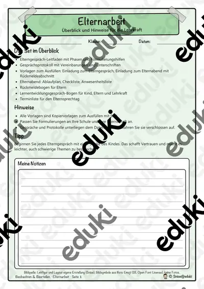
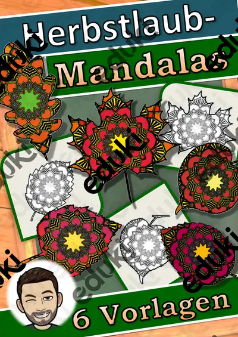
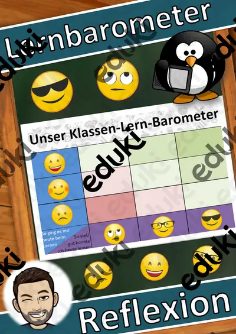

Fächer-Steckbriefe A–Z Klasse 1–10: Baukasten für Lehrkräfte – kostenlos

Lernentwicklungsgespräche Klasse 1–10: Baukasten für Lehrkräfte – kostenlos

Jahreszeiten-Werkstatt: Ostern: Ausmalbilder mit Wörtern – Plus-Paket, Klasse 1–4

Klassen-Werkstatt: Motivationsposter für die Klasse – kostenlos, Klasse 1–4

Klassen-Werkstatt: Geburtstagskalender mit Urkunde und Krone – kostenlos, Klasse 1–4

Klassen-Werkstatt: Tagesplankarten für die Tafel – kostenlos, Klasse 1–4

Klassen-Werkstatt: Schreibpapier Lineatur 1 bis 4 – kostenlos, Klasse 1–4

Elternarbeit für Lehrkräfte – Elterngespräch, Vorlagen Klasse 1–4

Klassen-Werkstatt: Klassenregeln-Plakate – kostenlos, Klasse 1–4

Korrekturbögen für Lehrkräfte – Korrekturraster, Vorlagen Klasse 1–4

Klassen-Werkstatt: Lobkärtchen und Belohnungssticker – kostenlos, Klasse 1–4

Beobachtungsbögen für Lehrkräfte – Arbeits- und Sozialverhalten, Vorlagen Klasse 1–4

Klassen-Werkstatt: Motivationsposter für die Klasse – Plus-Paket, Klasse 1–4

Klassen-Werkstatt: Geburtstagskalender mit Urkunde und Krone – Plus-Paket, Klasse 1–4

Klassen-Werkstatt: Tagesplankarten für die Tafel – Plus-Paket, Klasse 1–4

Klassen-Werkstatt: Schreibpapier Lineatur 1 bis 4 – Plus-Paket, Klasse 1–4

Klassen-Werkstatt: Lobkärtchen und Belohnungssticker – Plus-Paket, Klasse 1–4

Klassen-Werkstatt: Klassenregeln-Plakate – Plus-Paket, Klasse 1–4

Herbstlaub Mandala - Klassenzimmerdekoration - Kunst - Herbst

Das bin ich, Steckbrief - Das bin Ich - Schulanfang

Mit Konflikten umgehen - Konfliktlösung (Tafelmaterial) - Konfliktlöser

Einmaleins Megasparpaket Einmaleins (wachsend)

Einmaleins Materialpaket Spiele (auch Homeschooling) (kleines Einmaleins)

Materialpaket Muttertag, Vatertag (auch Homeschooling)

Einmaleins Schiffe versenken - (auch Homeschooling)

Vorlage Valentinstag

Vatertag - Homeschooling, Vatertag

Reflexion: Lernbarometer, Stimmungsbarometer
Keine Materialien gefunden – versuch einen anderen Suchbegriff oder Filter.